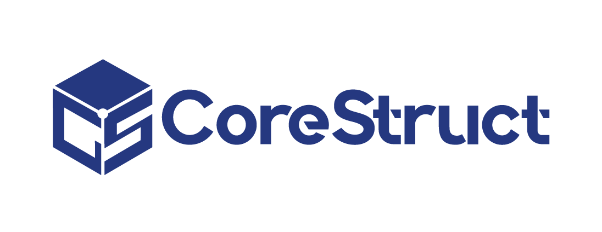
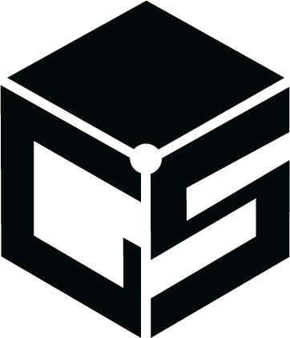

Kit de marca de los Reels
Lo que todo video de CoreStruct respeta, tomado del manual oficial (brand/MANUAL/CORE_STRUC_MANUAL.pdf). Las plantillas de templates/ ya lo aplican: este documento es la referencia para revisar y para diseñar formatos nuevos.
Colores
El marino da peso y fondo; el cyan es el acento y lo que resalta (palabra activa del subtítulo, palabra clave del gancho, barra de progreso). Los colores propios de cada demo solo aparecen dentro de la grabación de esa demo.
Tipografía
Manrope para TODO el texto del video: gancho, subtítulos, títulos, rótulos y tarjeta final. Quantify es exclusiva del logotipo y el nombre CoreStruct solo aparece como imagen del logo. No se usan Source Serif 4 ni IBM Plex Sans en video aunque existan en el sitio.
Logo
Solo en la tarjeta final (nunca en el gancho). Sobre fondo oscuro, versión blanca; sobre fondo claro, la azul; la negra solo sobre fondos muy claros si la azul no contrasta. Nunca deformarlo, recolorearlo, rotarlo ni agregarle efectos, y respetar su área de protección.




Piezas del video (a escala 25 %)
Lienzo 1080x1920 a 30 fps. La línea punteada es la zona segura combinada de Instagram y TikTok: 220 px arriba, 480 px abajo y 120 px a los lados. Todo texto vive dentro.
Reglas rápidas
| Pieza | Regla |
|---|---|
| Gancho (0-1.5 s) | Máximo 7 palabras, entendible sin audio, movimiento desde el fotograma 0. Nunca empieza con "Hola", con el logo ni con "En CoreStruct…". |
| Palabra clave | Chip blanco con lupa desde el segundo 0.15 (antes del 3); en el caption de TikTok dentro de los primeros 80 caracteres. |
| Subtítulos | Bloques de 2-3 palabras, Manrope 700 a 72 px, blanco con la palabra activa en #3898D4, caja #080b12 al 88 % para contraste. Siempre subtitulado. |
| Rótulos | Chip superior (y 246 px) con el nombre de lo que se ve; uno por escena. |
| Ritmo | Cambio visual cada 1.5-3 s; zoom suave 1.0 → 1.08 en tomas estáticas. |
| Barra de progreso | 8 px, degradado marino → cyan, justo encima de la zona segura inferior (y 1424 px). |
| Tarjeta final | 1.5 s: logo horizontal blanco, "Escríbenos al +504 9230-0861", corestructhn.com y @corestructhn. |
| Fondo | #080b12 con superficie #0d1220 y estrellas sutiles con semilla (la versión determinista del starfield del sitio). |
| Prohibido | Precios, rangos, descuentos, promociones, plazos, cifras de resultados, "oferta", "cotiza ya", marcas de agua de otras plataformas y marcas de terceros. |